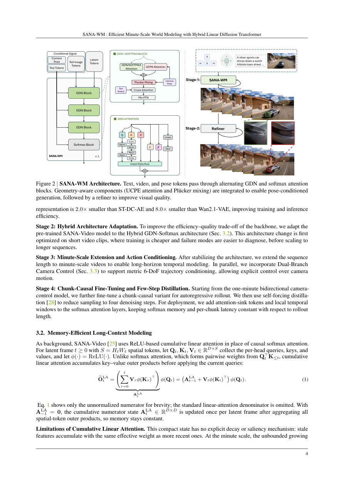

#1
★ 8/10
SANA-WM: Efficient Minute-Scale World Modeling with Hybrid Linear Diffusion Transformer
SANA-WM：基于混合线性扩散变换器的高效分钟级世界建模

图 Figure · Page 4 of paper
🎯 2.6B参数开源世界模型，36倍吞吐量生成60秒720p视频
A 2.6B open-source world model generating 60-second 720p videos with camera control at 36× higher throughput than prior baselines.
| 维度 | 中文 | English |
|---|---|---|
| ❓ 待解决 的问题 |
生成分钟级、高分辨率且带精准相机控制的视频极其昂贵，现有世界模型要么需要巨大算力，要么难以在长序列中保持时序一致性和动作跟随精度。开源方案在质量和效率上都远落后于工业系统，同时还缺乏从公开视频中提取高质量、度量尺度6自由度相机位姿标注的有效方法。 | Generating minute-long, high-resolution videos with precise camera control is extremely expensive — existing world models either require massive compute budgets or fail to maintain temporal consistency and accurate action-following over long sequences. Open-source alternatives lag far behind industrial systems in both quality and efficiency. There is also a lack of high-quality, metric-scale 6-DoF camera pose annotations from public video data to train such models. |
| 💡 解决 的亮点 |
• 混合线性注意力：将帧级门控DeltaNet（线性注意力）与Softmax注意力融合，实现无二次复杂度的长上下文高效建模。 • 双分支相机控制：专用双分支模块在整个分钟级生成过程中精确执行6自由度轨迹约束。 • 两阶段生成流水线：长视频精炼器对第一阶段输出进行后处理，显著提升整体质量和时序一致性。 • 鲁棒标注流水线：从公开网络视频中自动提取度量尺度6自由度相机位姿，仅用约21.3万视频片段即可完成训练。 | • Hybrid Linear Attention: Combines frame-wise Gated DeltaNet (linear attention) with softmax attention, enabling memory-efficient long-context video modeling without quadratic complexity. • Dual-Branch Camera Control: A dedicated dual-branch module enforces precise 6-DoF camera trajectory adherence throughout the full minute-long generation. • Two-Stage Generation Pipeline: A long-video refiner post-processes stage-1 outputs to improve quality and temporal consistency across the entire sequence. • Robust Annotation Pipeline: Automatically extracts metric-scale 6-DoF camera poses from public internet videos, enabling training on ~213K clips without expensive proprietary data. |
| 🧪 实验 内容 |
作者构建了一个分钟级世界模型基准，评估动作跟随精度和视觉质量，对比对象包括开源基线和工业基线（LingBot-World、HY-WorldPlay）。评估指标涵盖视觉保真度和相机轨迹跟随精度。效率基准测量了训练成本（GPU天数）、数据规模（约21.3万公开片段）及推理速度（单GPU生成60秒片段的秒数），并测试了在RTX 5090上采用NVFP4量化部署的蒸馏版本。 | The authors built a one-minute world-model benchmark to evaluate action-following accuracy and visual quality. They compared SANA-WM against open-source and industrial baselines including LingBot-World and HY-WorldPlay, evaluating metrics such as visual fidelity and camera trajectory adherence. Efficiency benchmarks measured training cost (GPU-days), data size (~213K public clips), and inference speed (seconds per 60s clip on a single GPU), including a distilled variant with NVFP4 quantization deployed on a single RTX 5090. |
| 📊 实验 结果 |
SANA-WM在视觉质量上与大规模工业模型（LingBot-World、HY-WorldPlay）相当，同时实现36倍更高吞吐量。在分钟级世界模型基准上，其动作跟随精度超越所有开源基线。仅用约21.3万公开视频片段，在64块H100上训练15天完成。蒸馏版本在单张RTX 5090上配合NVFP4量化，34秒内即可生成一段60秒720p视频，使消费级硬件上的分钟级世界建模成为可能。 | SANA-WM achieves visual quality comparable to large-scale industrial models (LingBot-World, HY-WorldPlay) while delivering 36× higher throughput. It outperforms prior open-source baselines in action-following accuracy on the one-minute world-model benchmark. Training completes in 15 days on 64 H100 GPUs using only ~213K public video clips. The distilled variant generates a 60-second 720p clip in just 34 seconds on a single RTX 5090 with NVFP4 quantization — making minute-scale world modeling feasible on consumer-grade hardware. |
| 🏁 结论 | SANA-WM证明，通过精心设计的混合线性扩散变换器，仅利用公开数据和适度算力即可实现高效、分钟级、高分辨率的世界建模，显著缩小了开源与工业世界模型之间的差距，同时大幅提升推理效率。 | SANA-WM demonstrates that efficient, minute-scale, high-resolution world modeling is achievable with a carefully designed hybrid linear diffusion transformer, using only public data and modest compute. It closes the gap between open-source and industrial world models while dramatically improving inference efficiency. |
| 🔗 论文 链接 |
arXiv: 2605.15178v1 · 📥 PDF | |
⚙️ Method · 方法详解
SANA-WM基于混合线性扩散变换器架构。注意力机制交替使用帧级门控DeltaNet线性注意力和标准Softmax注意力，在保持质量的同时降低内存开销。相机控制通过双分支模块注入，以6自由度位姿轨迹为条件引导生成。生成分为两个阶段：基础模型先生成粗糙的长视频，精炼器再提升其质量和一致性。为在无专有数据的情况下规模化训练，团队构建了一套自动标注流水线，通过几何重建技术从公开视频中估计度量尺度相机位姿。
SANA-WM is built on a hybrid linear diffusion transformer architecture. Its attention mechanism alternates between Gated DeltaNet linear attention (applied per frame for efficient long-range context) and standard softmax attention, reducing memory costs while retaining quality. Camera control is injected via a dual-branch module that conditions generation on 6-DoF pose trajectories. Generation is split into two stages: a base model produces a rough long video, then a refiner improves its quality and consistency. To train at scale without proprietary data, the team built an automated annotation pipeline that estimates metric-scale camera poses from publicly available videos using geometric reconstruction techniques.
📐 Key Formulas · 关键公式
\[\text{Attention}(Q, K, V) = \text{GDN}(Q, K, V) \oplus \text{Softmax}\left(\frac{QK^\top}{\sqrt{d}}\right)V\]
💡 混合线性注意力：将帧级门控DeltaNet（线性复杂度）与标准Softmax注意力结合，兼顾效率与建模能力
Hybrid linear attention combining frame-wise Gated DeltaNet (linear complexity) with standard softmax attention, balancing efficiency and modeling capacity
🌟 Why It Matters · 为什么重要
世界模型是训练具身智能和机器人系统的核心基础设施，但其高昂的算力成本长期将其局限于顶级实验室。SANA-WM的开源发布与消费级GPU推理能力，将极大降低这一技术门槛，有望加速基于仿真的机器人学习和自动驾驶研究。
World models are a key building block for training embodied AI agents and robotics systems, but their prohibitive compute cost has limited access to well-resourced labs. SANA-WM's open-source release with consumer-GPU inference democratizes this capability, potentially accelerating research in simulation-based robot learning and autonomous driving.